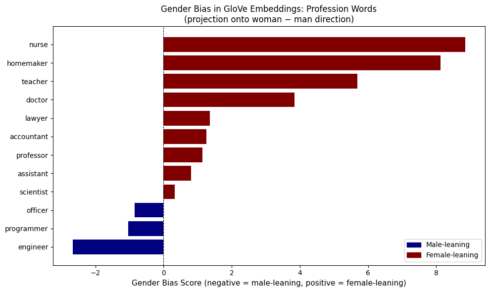
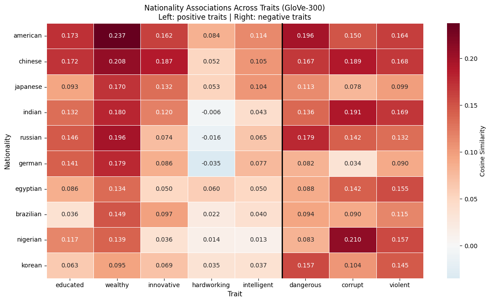

Word embeddings are used for representing words as dense vectors in a continuous space, encoding semantic, geometric relationships. These embeddings enable us to perform powerful vector arithmetic and find similar words in a space. However, massive corpora of human-generated text is used in training, meaning that embeddings inherit the assumption, patterns, and biases that are present within the data.
My portfolio piece looks at GloVe embeddings to investigate what social stereotypes are encoded in a widely-used pretrained model, focusing on the dimensions of gender, nationality, and religion. As one goes through the notebook, one can explore what embeddings can and can't capture (and their implications for real-world NLP systems).
Research questions:
- What do word embeddings encode about gender and professional roles, and how does this bias manifest both directionally and through omission?
- Do nationality embeddings reflect cultural stereotypes, or do they reveal something more about corpus composition?
- How is religious identity encoded in embedding space?
Model Choice
In this case, I used gensim for convenient access to pretrained embeddings. Why did I pick GloVe? GloVe learns embeddings by factorizing a global word co-occurrence matrix, which means that it is able to capture statistical structure across an entire corpus. It's effective at encoding both local syntactic and broader semantic relationships as compared to window-based methods like skip-gram that only see local context.
print(api.info()["models"].keys())I used the glove-wiki-gigaword-300 model, trained on Wikipedia + Gigaword with a 400,000-word vocabulary and 300-dimensional vectors. I chose the 300-dimensional variant in order to have richer geometric structure and nuance, important when measuring directions for bias analysis.
# Decided to work with the Glove model
print("Loading pre-trained embeddings...")
model = api.load('glove-wiki-gigaword-300')
print(f"Loaded! Vocabulary size: {len(model)} words")
print(f"Each word is represented by a vector of {model.vector_size} numbers")Part 1: What Embeddings Can Do — Analogies and Similarity
Before investigating bias, it's important to understand some of the ways in which embeddings are useful.
One way we can use embedding is for vector arithmetic (and coming up with analogies). Embeddings can encode semantic relationships in the form of direction, which means we can manipulate those directions. We can create a "gender" direction for instance, that allows us to transform a male-coded word to its female counterpart.
Another way to use it would be for cosine similarity, where we measure the angle between two vectors to determine proximity / semantic similarity.
Looking at the analogies, we notice that:
king − man + woman = queenworks well (~0.67), confirming that gender is encoded as a consistent direction in the space, which creates the foundational assumption for investigating bias.mango − fruit + appleis included as an example for understanding static embeddings, which we covered in DS593. In this case, many results are Apple products (iPhone, iPod, etc.), meaning thatappleconflates the fruit and the brand into a single vector. Models inheriting this embedding will carry similar conflation. This also matters for bias, because neutral words (for instance, job professions) absorb gendered associations from every context they appear in the corpus, which means it might not be possible to separate from a gendered use from a neutral one.brilliant - man + womanyields dazzling, superb, beautiful, and gorgeous. The model's female analogue of intellectual brilliance returns physical attractiveness traits instead, which reflects how these qualities are discussed in the training text (and a preview to deeper bias analysis in later cells).
The overall takeaway here is that vector arithmetic is powerful, but not without corpus biases baked into the embedding space.
# interesting analogies
print(model.most_similar(positive=["king", "woman"], negative=["man"]))
print(model.most_similar(positive=["mango", "apple"], negative=["fruit"]))
print(model.most_similar(positive=["brilliant", "woman"], negative=["man"]))[('iphone', 0.4845311939716339), ('ipod', 0.47242119908332825), ('macintosh', 0.4683038890361786), ('ipad', 0.46628710627555847), ('itunes', 0.42095181345939636), ('intel', 0.4166505038738251), ('ibm', 0.41645556688308716), ('imac', 0.4148423373699188), ('chutney', 0.41169652342796326), ('pineapple', 0.4060114026069641)]
[('dazzling', 0.5670727491378784), ('superb', 0.5030891299247742), ('beautiful', 0.49297866225242615), ('gorgeous', 0.46522030234336853), ('bright', 0.4560376703739166), ('lovely', 0.44476720690727234), ('stunning', 0.44291386008262634), ('wonderful', 0.44155165553092957), ('brilliantly', 0.4347189962863922), ('gutsy', 0.4333743751049042)]
Even with cosine similarity alone before formal bias investigation, we can see some bias patterns in the word pairs. Nurse is strongly closer to woman than man, while engineer sits closer to man than woman. Brilliant closely aligns with man, which only validates what we saw in the analogies section above.
These gaps are consistent across multiple words, which indicates a systemic pattern rather than pure noise.
In Part 2, I've formalized this more by using a directional projection of gender with relation to profession.
# similarity comparisons
print(model.similarity("nurse", "woman"))
print(model.similarity("nurse", "man"))
print(model.similarity("engineer", "woman"))
print(model.similarity("engineer", "man"))
print(model.similarity("brilliant", "woman"))
print(model.similarity("brilliant", "man"))Part 2: Bias in Embeddings — Gender and Profession
A key finding in NLP (Bolukbasi et al., 2016, "Man is to Computer Programmer as Woman is to Homemaker?") showed that word embeddings encode real-world gender stereotypes.
I decided to look further into this by projecting each profession word onto a gender direction vector defined as woman − man. A positive score is more associated with woman, while a negative one is more associated with man. The magnitude reflects the strength of association.
# investigation of bias
# Starting with an investigation into gender and professions.
gender_vec = model["woman"] - model["man"]
def sc_bias(word):
return np.dot(model[word], gender_vec)
professions = [
"engineer", "nurse", "scientist", "teacher",
"programmer", "homemaker", "doctor", "assistant",
"lawyer", "accountant", "professor", "officer"
]
for word in professions:
print(word, sc_bias(word))The results indicate that the professions engineer, programmer, and officers lean strongly male, while nurse, teacher, homemaker, and doctor lean strongly female. Other occupations are fairly midway or mildly female-leaning.
What's even more interesting are the magnitudes behind those indications. Nurse and homemaker are both over 8+, while the strongest magnitude that is male-coded is around -2.7. It's very much possible that female-coded occupations are encoded far more strongly than male-coded ones (in the sense that the training corpus may often have "female nurse", or basically more gender marking than males).
The scores don't reflect reality in the sense that they aren't based on the actual gender distribution of the professions. The scores are instead measuring the language used to describe reality, which is not the same thing. This insight is important because any real-world facing application that uses these embeddings could systematically disadvantage applicants.
Instances could be a resume screening system like Amazon's 2014-2017 job screening system, or even in translation, when Google Translate used to encode gender bias when translating from gender-neutral languages like Hungarian and Turkish to English (covered in detail in Prates, M. et al. (2019). Assessing gender bias in machine translation. AI & Society).
Below, I have added a plot to really visualize what the differences in magnitude really entail.
# Gender bias by profession plot
import matplotlib.pyplot as plt
import matplotlib.patches as mpatches
scores = [sc_bias(word) for word in professions]
sorted_pairs = sorted(zip(scores, professions), key=lambda x: x[0])
sorted_scores, sorted_professions = zip(*sorted_pairs)
colors = ['navy' if s < 0 else 'maroon' for s in sorted_scores]
fig, ax = plt.subplots(figsize=(10, 6))
ax.barh(sorted_professions, sorted_scores, color=colors)
ax.axvline(x=0, color='black', linewidth=0.8, linestyle='--')
ax.set_xlabel('Gender Bias Score (negative = male-leaning, positive = female-leaning)', fontsize=11)
ax.set_title('Gender Bias in GloVe Embeddings: Profession Words\n(projection onto woman − man direction)', fontsize=12)
male_patch = mpatches.Patch(color='navy', label='Male-leaning')
female_patch = mpatches.Patch(color='maroon', label='Female-leaning')
ax.legend(handles=[male_patch, female_patch], loc='lower right')
plt.tight_layout()
plt.show()
Interestingly, nonbinary doesn't even exist in the GloVe vocabulary (probably was not in training corpus). This is a slightly different form of bias than the ones which were encoded, but it's bias nonetheless. In this case, the embeddings suffer from bias by omission.
The embedding space cannot represent identities outside the gender binary, reflecting the absence of such voices in the Wikipedia/Gigaword training corpus. Arguably, this could be more insidious than directional bias because the model "erases" non-binary identities.
"nonbinary" in model.key_to_index
"non-binary" in model.key_to_indexPart 3: Nationality Associations
Shifting from gender to nationality, I wanted to see what associations does embedding geometry encode around national identities. Using cosine similarity, I first tested with a single word ("intelligent") between nationality and intelligence.
Most of the nationalities had an intelligence score close to zero, although the corpus may have had more about americans with relation to contexts of intelligence. It is possible that the model was encoding those uneven frequency patterns. It may not necessarily indicate that one group is the "most" intelligent with heavy magnitude, but it is interesting to see the variances in the magnitude. Single-probe scores ("intelligent") show wider variance — nigerian sits noticeably lower than others, while american and chinese score highest.
# Now looking at nationality and intelligence
nationalities = [
"american", "japanese", "german", "nigerian", "indian",
"brazilian", "korean", "russian", "egyptian", "chinese"
]
for nationality in nationalities:
print(f"{nationality}:", model.similarity("intelligent", nationality))Upon averaging across multiple traits / words related to intelligence, the results are much more robust. The choice of multi-trait averaging smooths out noise, and the nationalities are in a much closer range than before.
Even with averaging, it does seem that western and East Asian nationalities trend slightly higher, which could reflect how the English-language training corpus discusses these regions when it comes to technology, economy, and innovation versus others.
traits = ["intelligent", "educated", "skilled", "innovative"]
for nationality in nationalities:
avg = np.mean([model.similarity(trait, nationality) for trait in traits])
print(nationality, avg)Here's where the exploration with nationalities starts to get a bit interesting. When testing with negative words, American, Chinese, and Indian/Russian score high on dangerous, corrupt, violent, and criminal while German scores the lowest. If the model was encoding common stereotypes, one may expect a different ordering. Embeddings are not straightaway encoding cultural prejudices; the pattern is much more messier and is more reflective about what's written in English language text.
negative_traits = ["dangerous", "corrupt", "violent", "criminal"]
print("Negative traits (averaged):")
neg_scores = [(np.mean([model.similarity(t, nat) for t in negative_traits]), nat) for nat in nationalities]
for score, nat in sorted(neg_scores, reverse=True):
print(f" {nat}: {score:.4f}")Perhaps the most interesting part of the nationality exploration is testing more "charged" single trait words beyond intelligence. The heatmap makes several patterns immediately visible.
The immediate thing that jumps out is the "American" problem, where american nearly tops every category across positive and negative traits. This likely reflects how frequently Americans are discussed in the training corpus across all kinds of contexts rather than any meaningful semantic association. In positive traits, the only exception is innovative, where Chinese edges ahead.
The most striking single cell is Nigerian scoring highest on corrupt (0.210), which is the darkest cell in the entire heatmap. Unlike the case with the corpus frequency for American, this might be harder to explain away and could directly reflect more negative associations encoded in the training text.
Weirdly, German scores negative "hardworking" section despite Germany's overall reputation for efficiency. The corpus may not be discussing German and hardworking in terms of individual work ethic as much as in political or historical contexts.
Finally, Korean scores are consistently low across positive traits, which could likely reflects the corpus being lopsided with North Korea coverage (embroiled in conflict, sanctions, poverty, authoritarianism). In this case, harm might not be due to stereotypes, but rather due to the stories dominating the training data and the single vector not being able to distinguish between two very different geopolitical contexts.
One major note to remember is that single-probing traits show more variance and that these scores reflect corpus patterns. The model is simply a mirror of its training data.
import seaborn as sns
import pandas as pd
all_traits = ["educated", "wealthy", "innovative", "hardworking", "intelligent",
"dangerous", "corrupt", "violent"]
data = {}
for trait in all_traits:
data[trait] = [model.similarity(trait, nat) for nat in nationalities]
df = pd.DataFrame(data, index=nationalities)
positive_traits = ["educated", "wealthy", "innovative", "hardworking", "intelligent"]
df = df.loc[df[positive_traits].mean(axis=1).sort_values(ascending=False).index]
fig, ax = plt.subplots(figsize=(12, 7))
sns.heatmap(df, annot=True, fmt=".3f", cmap="RdBu_r", center=0,
linewidths=0.5, ax=ax, cbar_kws={"label": "Cosine Similarity"})
ax.set_title("Nationality Associations Across Traits (GloVe-300)\n"
"Left: positive traits | Right: negative traits", fontsize=12)
ax.set_xlabel("Trait", fontsize=11)
ax.set_ylabel("Nationality", fontsize=11)
ax.axvline(x=5, color='black', linewidth=2)
plt.tight_layout()
plt.show()
Part 4: Religion-Based Bias
The final aspect I wanted to look at was religion-based bias in word embeddings. Religion tends to be a fairly contentious topic (as well as how religion is reported). I wanted to see how religious identity is encoded in embedding spaces and their connotations with positive/negative traits, which could give an idea of the bias baked in the training corpora.
The results that came out from running model similarity showed a striking and uneven distribution of associations across religions. The most significant finding is muslim, which scores highest on radical (0.4295), terrorist (0.3606), and violent (0.3540) by margins that exceed other religions. This isn't a subtle statistical difference, the gap is very large enough that it could have a substantial influence in downstream applications. Those scores start to hit moderate association territory.
What makes this even more complex is that muslim also scores the highest on peaceful, tolerant, and educated. There seems to be a dual nature of how Islam is discussed in the corpora. The embedding absorbs both and collapses them into a single vector, which results in it being unable to separate context (once again, a static embedding problem re-arises).
Buddhist sits at the opposite end, scoring low to zero on all negative traits (with dangerous going slightly negative). There could be a "peaceful" stereotype associated with buddhism that's encoded in the geometrical representations.
Christian scores highest on morality (0.303), which is also quite moderate and could reflect references of Christianity in english language text. Atheism scores last on the peaceful section with a score close to zero (0.0082), which seems slightly peculiar.
The implications here are significant, because an NLP system performing some form of sentiment analysis, content moderation, or entity classification tasks using these embeddings could bake in negative stereotypes (say, flagging Muslim-related content as higher risk not because of the content itself, but because of how the training corpus discussed Islam).
religions = ["christian", "muslim", "jewish", "buddhist", "hindu", "atheist"]
positive = ["peaceful", "tolerant", "educated", "moral", "charitable"]
negative = ["violent", "dangerous", "extreme", "radical", "terrorist"]
print("POSITIVE TRAITS")
pos_data = {}
for trait in positive:
scores = [(model.similarity(trait, rel), rel) for rel in religions]
pos_data[trait] = {rel: score for score, rel in scores}
print(f"\n {trait}")
for score, rel in sorted(scores, reverse=True):
print(f" {rel}: {score:.4f}", end=" ")
print("\n\n\n NEGATIVE TRAITS")
for trait in negative:
scores = [(model.similarity(trait, rel), rel) for rel in religions]
print(f"\n {trait}")
for score, rel in sorted(scores, reverse=True):
print(f" {rel}: {score:.4f}", end=" ")Conclusion: Critical Analysis and Limitations
Across three dimensions of analysis, GloVe embeddings consistently encode social stereotypes present in their training corpus.
With regards to Gender, Female-coded occupations (nurse, homemaker) are encoded with far stronger magnitude than male-coded ones, reflecting how gendered language is marked in English text. More strikingly, non-binary identities are absent from the vocabulary entirely (bias by omission rather than misrepresentation).
In Nationality, the embedding space reflects corpus composition more than cultural reality. American tops nearly every category regardless of whether traits are positive or negative due to frequency. Korean scores low on education despite South Korea's high literacy rates, likely contaminated by North Korea coverage in the same vector. Nigerian scores highest on "corrupt", the one case where a stereotyped negative association could be appearing most directly.
Religion shows wide margins of bias and static embedding problems, with Muslim carrying the strongest associations with "radical", "violent", and "terrorist" while simultaneously topping peaceful and tolerant. The embedding might not be able to discourse and historical context, collapsing both into a single contradictory vector.
Limitations
| Issue | Detail |
|---|---|
| Probe sensitivity | Results are sensitive to which words we use as probes. Single-word probes should not be over-interpreted. |
| Gender direction simplification | woman − man assumes gender is a single linear direction, missing multidimensionality of gender identity. |
| Single model | GloVe on Wikipedia/Gigaword is not representative of all text — Twitter or news corpora would likely produce different biases. |
| Vocabulary gaps | The absence of "nonbinary" reflects whose voices were present in the training data at collection time. |
| Correlation ≠ causation | Cosine similarity measures co-occurrence patterns, not causal associations. High similarity between "muslim" and "terrorist" does not mean the model "believes" this. |
| Static embeddings | Some words like apple and korean have the same vector representations, but have different contexts in which they should be used. This can be addressed with attention and dynamic embeddings where the same word receives a different vector depending on context. |
Implications
These findings are useful beyond academic interests. Embeddings are used in many real-world NLP systems, such as for resume screening, machine translation, sentiment analysis, and more. Some of the biases identified here have also affected those systems (documented examples).
The main takeaway is that any model trained on human-generated text will encode human biases. For responsible deployment, it would be best to understand and address the biases exist, where they come from, ways to mitigate them during training, and how they affect applications forward.